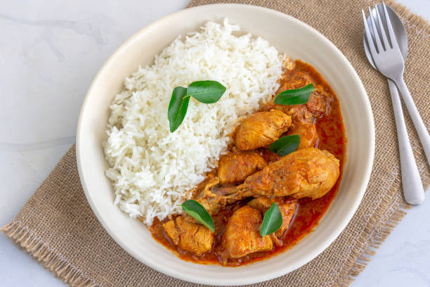

HomePage for Curry Rice Recipe

Description of Curry Rice
Curry chicken and rice is a vibrant, aromatic dish that’s bursting with layers of flavor. The tender, juicy chicken absorbs the rich spices of the curry, whether it’s a creamy coconut base or a spicier, tomato-forward sauce, creating a comforting and satisfying meal. Paired with perfectly steamed rice that soaks up every drop of the flavorful curry, it’s a dish that brings warmth and delight to the table. It’s my favorite food because it’s both nourishing and indulgent, combining bold, exciting flavors with a hearty, home-cooked feel that makes every bite feel like a hug for the soul.
- How to make Curry Chicken and Rice- The Recipe:
- 1.5 lbs chicken (thighs or drumsticks, bone-in for extra flavor)
- 2 tbsp vegetable oil
- 1 medium onion, diced
- 3 garlic cloves, minced
- 1 tbsp fresh ginger, grated
- 2-3 tbsp curry powder (adjust to taste)
- 1/2 tsp turmeric
- 1/2 tsp cayenne pepper (optional, for spice)
- 1 can (14 oz) coconut milk
- 1 cup chicken stock
- 1 large tomato, diced
- Salt and pepper to taste
- 2 cups jasmine or basmati rice
- Fresh cilantro (optional, for garnish)
Steps
- Cook the Rice
- Prepare the Chicken
- Sauté Aromatics
- Build the Curry Base
- Add Liquids and Tomato
- Cook the Chicken
- Serve